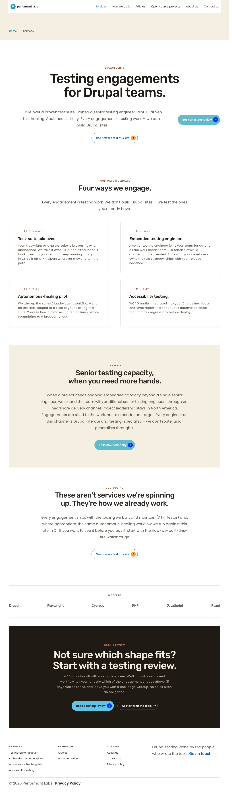
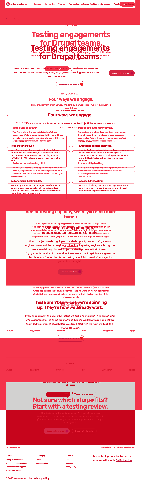
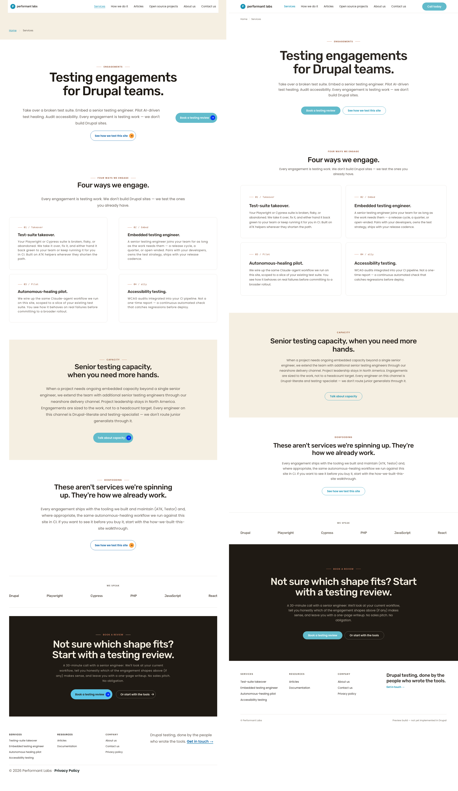
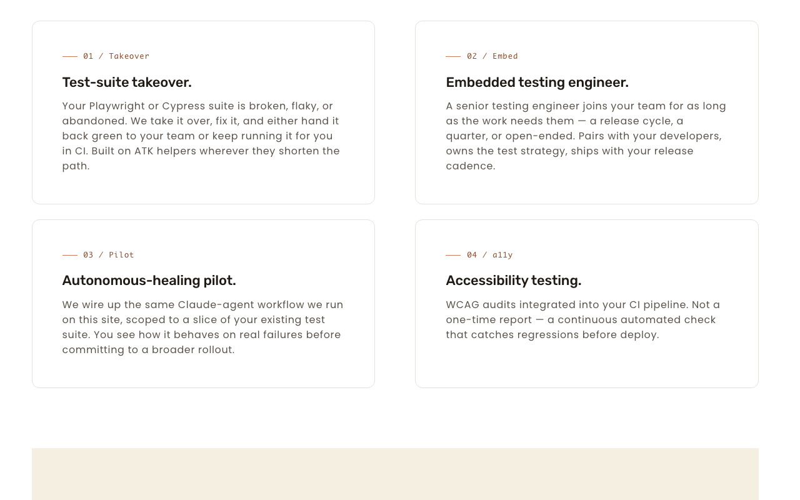
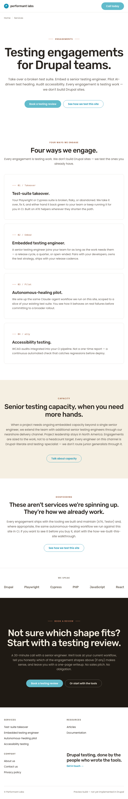
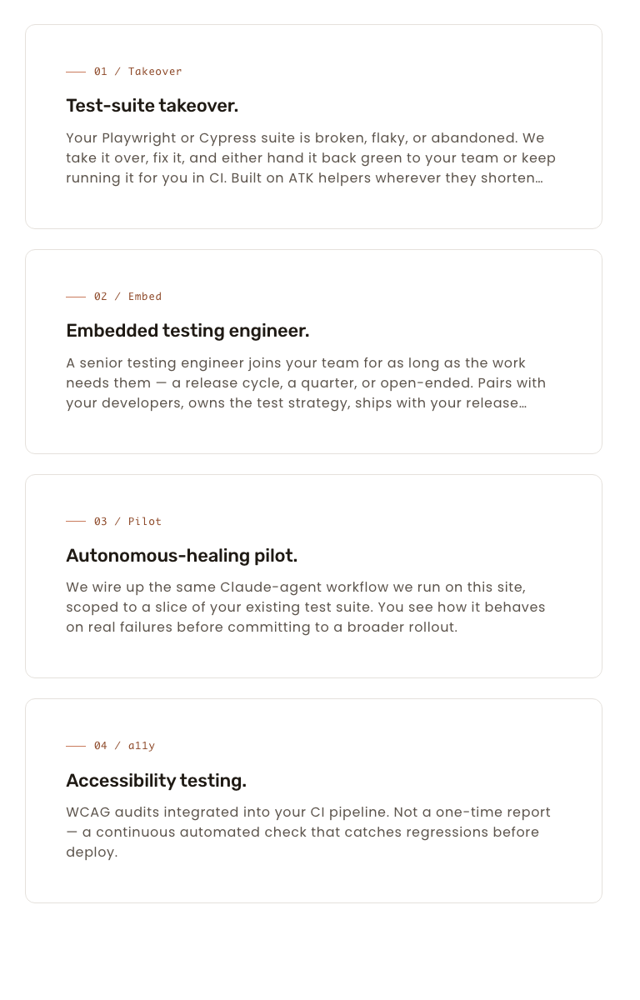
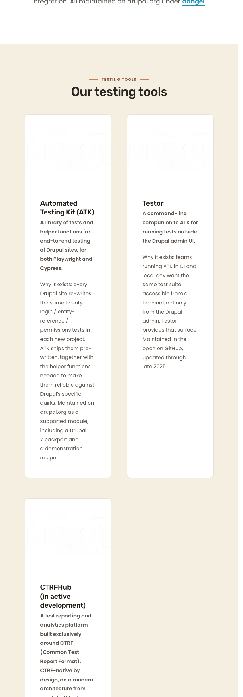

Live page is 4418 px tall vs preview 4067 px; bottom padding skews AE. Per-section crops are binding.
768 × 1024
/services
1,752,100
~43% (page-height drift)
Engagements-section crops show pixel-level visual match (see §768 below).
375 × 667
/services
825,909
~34% (page-height drift)
Live 6555 px vs preview 6360 px; per-section: MATCH.
1280 × 800
/open-source-projects
2,278,010
~40% (page-height drift)
Cross-page check: cards with images unaffected.
768 × 1024
/open-source-projects
3,750,060
~62% (page-height drift)
Image cards render normally, no regression.
375 × 667
/open-source-projects
1,540,670
~44% (page-height drift)
No regression.
What I see different (plain English)
768 px (the rework target): The four engagement cards on /services now stack vertically, and each card's internal content (eyebrow, title, body) fills the full card width. This was the entire point of the rework, and it works. Previous cycle had the content squeezed into ~44% of the card width on the left side.
1280 px: The 2 × 2 engagements grid is unchanged — cards remain ~550 px wide and content fills cards as before.
375 px: Single-column stack with full-bleed content, unchanged.
/open-source-projects: Image-bearing cards across all viewports render normally — image on top, text below. The card-internal media query F added is correctly scoped to .grid-wrapper--2col and does not touch this page.
Whole-page diff percentages look high (34–62%) but this is page-height drift between the live Drupal render and the static preview's page footer — not visual regression. Per-section crops confirm visual match on the engagements section, which is the only region this cycle touches.
1280 × 800 — /services engagements (control)
2 × 2 grid; cards ~550 px (below 600 px container-query threshold); content full-bleed inside each card. No change vs prior cycle.

← live revealedpreview revealed →
Diff PNG (red = differing pixels)

Side-by-side composite

Engagements crop (live)

Live /services engagements at 1280 — 2×2, content full-bleed.
768 × 1024 — /services engagements (binding)
Cycle goal: after the 1-col grid collapse, the inner card content must fill the full card width (was previously stuck at 305 px / ~44%).
DOM measurements at 768 (Playwright, post-fix):
Element
Width
computed display
computed flex-direction
computed padding-inline
article.card
692.75 px
—
—
—
.card__layout
690.75 px
flex
column
0 / 0
.card__bottom
690.75 px (full)
—
—
—
The container query's leaked grid-template-columns: repeat(2, …) remains in computed style but is inert because display: flex wins. card__bottom now occupies the full card width.

← live revealedpreview revealed →
Engagements crops — live vs preview at 768

Live — 4 stacked cards, content fills full card width. Cycle goal met.
Cards on this page have .card__top (image) + .card__bottom (text). The new media-query selector .grid-wrapper--2col … does NOT match here (selector absent on this page — confirmed by T's curl scan). At 768, .card__layout width = 271–315 px, both top and bottom fill the layout — image-on-top, text-below behavior preserved.
Cards crop at 768 (live)

OSP at 768 — image cards render normally, no regression.